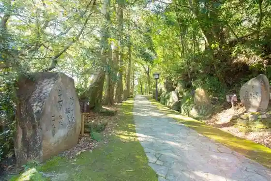
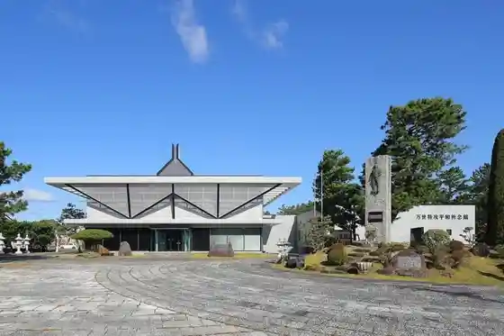
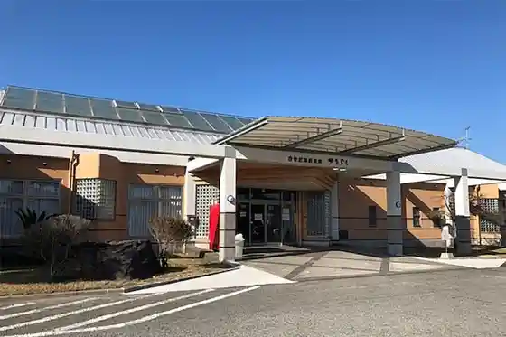
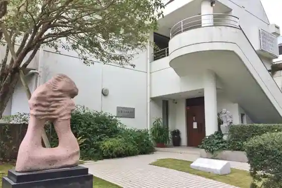

Prefectural Fukiage Hama Seaside Park
Minamisatsuma, Kagoshima · 0993-52-0910 · Official / source link
Takeda Jinja Toinishihe no Michi (Nisshin Ko Iroha Uta Kahi)
Minamisatsuma, Kagoshima · 0993-52-2841 · Official / source link

Bansei Tokko Heiwa Kinen Kan
Minamisatsuma, Kagoshima · 0993-52-3979 · Official / source link

Kaseda Kaihin Onsen
Minamisatsuma, Kagoshima · 0993-52-0226 · Official / source link

Yoshii Junji Art Museum
Minamisatsuma, Kagoshima · 0993-53-6778 · Official / source link

Nansatsu Tetsudo Memorial Museum
Minamisatsuma, Kagoshima · 0993-53-2102 · Official / source link
Sansettoburijji
Minamisatsuma, Kagoshima · 0993-53-2111 · Official / source link
Beppu Castle Ruins (Kaseda Shiro)
Minamisatsuma, Kagoshima · 0993-53-2111 · Official / source link
Hoki no Yama Park
Minamisatsuma, Kagoshima · 0993-53-2111 · Official / source link
Kasasa Art Museum (Kurose Tembo Museum)
Minamisatsuma, Kagoshima · 0993-63-0990 · Official / source link
Dai to Ishigaki Gun Village
Minamisatsuma, Kagoshima · 0993-53-2111 · Official / source link
Kamegaoka
Minamisatsuma, Kagoshima · 0993-53-2111 · Official / source link
Mimi Shu Toge
Minamisatsuma, Kagoshima · 0993-53-2111 · Official / source link
Bonotsu Rekishi Shiryo Center Teru Tsu Kan
Minamisatsuma, Kagoshima · 0993-67-0171 · Official / source link
Ganjin Memorial Museum
Minamisatsuma, Kagoshima · 0993-68-0288 · Official / source link
Ganjin So (Teichiami Gyogyo Experience)
Minamisatsuma, Kagoshima · 0993-68-0652 · Official / source link
Maruki Hama (Campground)
Minamisatsuma, Kagoshima · 070-4426-5286 · Official / source link
Roadside Station Kinpo (Ki Hana Kan)
Minamisatsuma, Kagoshima · 0993-77-3833 · Official / source link
Mitake
Minamisatsuma, Kagoshima · 0993-53-2111 · Official / source link
Rekishi Koryu Kan Kinpo
Minamisatsuma, Kagoshima · 0993-58-4321 · Official / source link
Prefectural Fukiage Hama Seaside Park
Minamisatsuma, Kagoshima · 0993-52-0910 · Official / source link
Minamisatsuma Kaido Hakkei
Minamisatsuma, Kagoshima · 0993-53-2111 · Official / source link
Toji no Sato Kasasa
Minamisatsuma, Kagoshima · 0993-63-1002 · Official / source link
Kujira no Nemuru Oka Zasho Kujira Kinenhi
Minamisatsuma, Kagoshima · 0993-53-2111 · Official / source link
Kinpo Town Ono no Hotaru
Minamisatsuma, Kagoshima · Official / source link
Kaseda Kugino no Hotaru
Minamisatsuma, Kagoshima · Official / source link
Kasasa Town Kurose no Hotaru
Minamisatsuma, Kagoshima · Official / source link
Kaseda Uchiyamada no Hotaru
Minamisatsuma, Kagoshima · Official / source link
Hombo Shuzo Marusu Tsu Kan Joryu Tokoro
Minamisatsuma, Kagoshima · 0993-55-2121 · Official / source link
Takasaki Yama
Minamisatsuma, Kagoshima · 0993-53-2111 · Official / source link
Saikuringutaminaru
Minamisatsuma, Kagoshima · 0993-53-8739 · Official / source link
Minamisatsuma Bonotsu B&G Kaiyo Center
Minamisatsuma, Kagoshima · 0993-68-0185 · Official / source link
(007 Ha Nido Shinu) Rogachi
Minamisatsuma, Kagoshima · 0993-53-2111 · Official / source link
Fukiage Hama Saikuringurodo
Minamisatsuma, Kagoshima · 0993-53-2111 · Official / source link
Kaseda Fumoto Buke Yashiki Gun
Minamisatsuma, Kagoshima · 090-4512-6325 · Official / source link
Rinrin Rodo
Minamisatsuma, Kagoshima · 0993-53-2111 · Official / source link
So Tsurugi Ishi
Minamisatsuma, Kagoshima · 0993-53-2111 · Official / source link
mojo-cafe357
Minamisatsuma, Kagoshima · 0993-76-8070 · Official / source link
Bonotsu Tourist Information
Minamisatsuma, Kagoshima · 0993-67-1310 · Official / source link
Aizen Ya
Minamisatsuma, Kagoshima · 0993-78-2897 · Official / source link
Kanko Bussan Koryu Shisetsu Kiyattamonse Minamisatsuma
Minamisatsuma, Kagoshima · 0993-53-3751 · Official / source link
Tourist Farm Sanasubirejji
Minamisatsuma, Kagoshima · 0993-78-4050 · Official / source link
Takaebimonyumento
Minamisatsuma, Kagoshima · Official / source link